Усі екрани, усі кнопки, послідовність роботи — і п’ятнадцять сценаріїв, які ми просимо пройти, щоб побачити, де система хибить.
Знімки зроблені на телефонній ширині з робочої збірки вересня 2026 року. Дрібниці в тебе можуть відрізнятися: продукт міняється щотижня. Зокрема плитки нагоди скоро перемалюють — їх стане сім і додасться окрема плитка «Інше». Якщо бачиш інший набір плиток — так і має бути, це не поломка.
Люстерко — застосунок, який збирає жінці готові образи з речей, які справді продаються в українських крамницях. Ти розповідаєш, куди збираєшся; Люстерко перебирає близько дванадцяти тисяч речей і показує чотири варіанти вбрання — з фотографіями, цінами й поясненням, чому саме так.
За кожним образом стоїть стилістка: вона читає твої слова, заповнює сценарій і пояснює зібране людською мовою. Наша задача — зрозуміти, де вона помиляється: де річ не пасує до нагоди, де кольори сваряться, де пояснення звучить як нісенітниця.
Не треба писати звіт, вести таблицю чи описувати поломки окремо — усе, що ти напишеш у полі «Своїми словами», ми побачимо у файлі вердиктів. Окремо пиши тільки про те, що зламалось: біла сторінка, застрягло очікування, кнопка не тисне (розділ 14).
| Телефон | Будь-який. Тримай вертикально — застосунок малювався під телефонну ширину. |
| Інтернет | Потрібен: фотографії речей тягнуться з крамниць, а стилістка думає не на телефоні. |
| Твоє фото | Портрет (обличчя при денному світлі) і фото на повний зріст. Обидва — необов'язкові, але з ними перевірка значно цінніша. Фото лишаються на твоєму телефоні. |
| Сантиметрова стрічка | Для чотирьох обхватів на третьому кроці знайомства. |
| Час | Один сценарій — приблизно 15–20 хвилин разом із вердиктами. |
Ось увесь шлях. Перші три кроки робляться один раз — далі кожен новий сценарій починається одразу з четвертого.
Вердикти живуть на твоєму телефоні. Доки ти не вивантажила файл і не надіслала його — ми їх не бачимо. Не чисти дані браузера й не відкривай Люстерко в приватному вікні: так вердикти зникнуть.
Вони є на кожному екрані, окрім знайомства.
| Сценарій | Головний екран: розмова зі стилісткою і картка сценарію. Звідси починається кожен новий образ. |
| Образи | Останні зібрані образи; звідти — посилання Усі образи на всю бібліотеку й на вивантаження вердиктів. |
| Оцінити | Окремий шлях: сфотографуй свій власний образ і спитай, як він. |
| Профіль | Фото, кольори, ім'я, обхвати — усе, що ти вводила на знайомстві. Тут це можна змінити. |
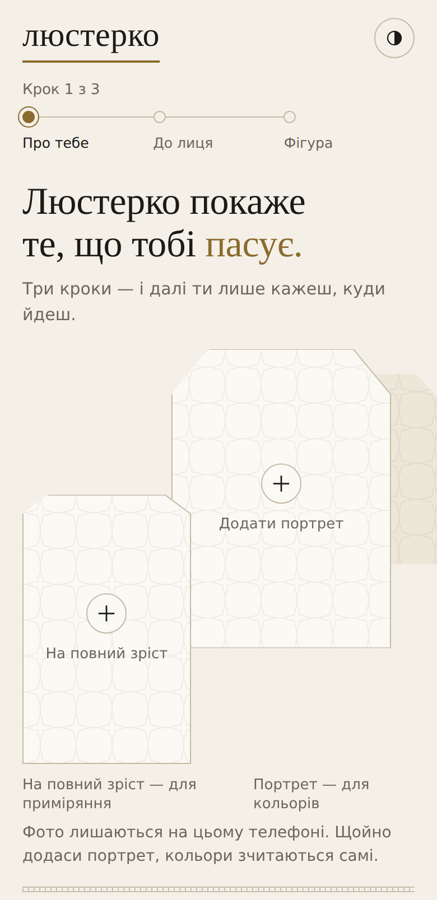
Два порожні віконця вгорі — це слоти для фото. Тапни їх, щоб узяти знімок із галереї або зняти просто зараз.
| Додати портрет | Обличчя при денному світлі, без фільтрів. З нього Люстерко саме зчитує твої відтінки шкіри, волосся й очей. |
| На повний зріст | Потрібне лише для кнопки «Приміряти на себе» — щоб намалювати образ на тобі. |
| Твої кольори | Смужки під заголовком. Після портрета заповнюються самі; рядок «Прочитано: …» каже, що саме зчиталось. |
| Зчитати кольори з портрета | Перечитує відтінки ще раз — натискай, якщо вони не з'явились або виглядають неправильно. |
| Інший шлях — через будь-який чат-помічник | Обхідний шлях, якщо портрета нема або кольори не зчитались. Розгорни, скопіюй запит, надішли його з фото у свій звичайний чат-помічник і встав відповідь назад. Здебільшого тобі це не знадобиться. |
| Ім'я або псевдонім | Як стилістка до тебе звертатиметься. Справжнє ім'я не обов'язкове. |
| Дозволяю записати мої відтінки… | Галочка. З нею у вердикті поїдуть і твої відтінки — нам це дуже потрібно. Без неї вердикт запишеться без кольорів. |
| Далі → | Чорна кнопка внизу. Переводить на наступний крок. |
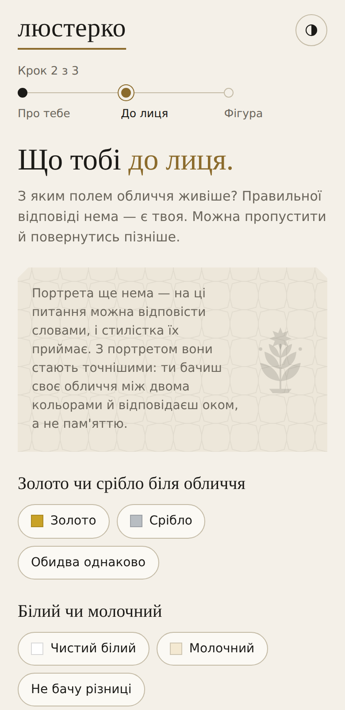
Чотири питання про те, з яким кольором біля обличчя ти виглядаєш живіше. Кожне — три кнопки, і третя завжди «не бачу різниці» чи «не знаю». Цей крок можна пропустити — просто тисни Далі.
Унизу — лічильник «Відповіла на 0 з 4» і посилання Скинути відповіді. Кнопка Спитати стилістку передає питання їй, якщо ти сама не певна.
Пройди один сценарій, відповівши на всі чотири, і один — не відповівши на жодне. Нам важливо знати, чи стає гірше без цих відповідей.
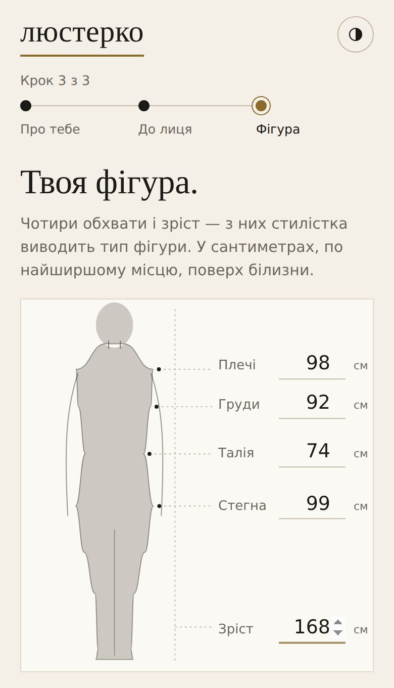
Чотири обхвати й зріст, у сантиметрах, по найширшому місцю, поверх білизни: плечі, груди, талія, стегна, зріст. Із них стилістка виводить тип фігури — від нього залежать крій і посадка.
Малюнок фігури поруч підказує, де саме міряти. Тапни число, щоб ввести своє.
На цьому кроці кнопка називається Готово. Після неї знайомство закінчене: більше воно не з'явиться, а змінити все введене можна у вкладці Профіль.
Якщо Готово не тисне, хоча всі п'ять чисел уведені, або якщо після нього нічого не відбувається — це поломка. Запиши, які числа стояли в полях.
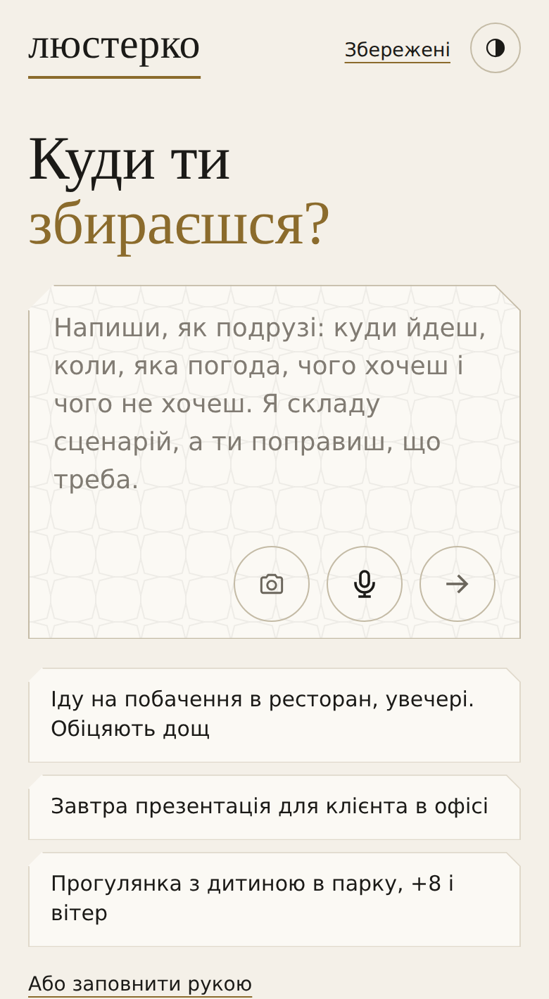
Це серце застосунку. Велике поле посеред екрана — аркуш листа до стилістки. Пиши в нього як подрузі: куди йдеш, коли, яка погода, чого хочеш і чого не хочеш.
Угорі екрана: Збережені — сценарії, які ти зберегла раніше; кружечок справа перемикає світлу й темну тему. Щойно сценарій почався, поруч з'являється Новий — почати наступний з чистого аркуша.
| Поле «Напиши, як подрузі…» | Текст. Можна в одне речення, можна абзацом. Стилістка сама розбере його на нагоду, місце, ошатність і погоду. |
| Значок фотоапарата | Додати фото речі до репліки: «хочу зібрати образ ось під цю спідницю». Можна кілька фото в одне повідомлення. |
| Значок мікрофона | Сказати голосом. Слова лягають у поле — і не надсилаються самі: спершу подивись, чи правильно розпізналось, потім тисни стрілку. |
| Стрілка → | Надіслати репліку стилістці. |
| Три приклади під полем | Готові репліки. Тапни, щоб підставити в поле — зручно, коли не знаєш, з чого почати. |
| Або заповнити рукою | Посилання внизу. Відкриває картку сценарію порожньою, щоб заповнити рядки самій, без розмови. |
Вона записує сказане й може м'яко запросити розповісти ще — про мету образу, прикраси чи макіяж. Це завжди необов'язково: якщо ти проігноруєш запрошення, вона не повторить його і образи збере все одно. Питає вона тільки те, без чого образ узагалі не зібрати.
Помилкою вважай: наполегливі повтори того самого питання; питання, що блокує збирання; допит по одному питанню за репліку; питання про те, що ти вже сказала.
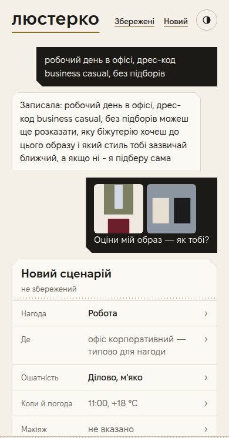
Щойно стилістка тебе зрозуміла, під розмовою з'являється картка — це переказ того, що вона почула. Вісім рядків, і кожен тапається: відкриється аркуш знизу, де це можна поправити.
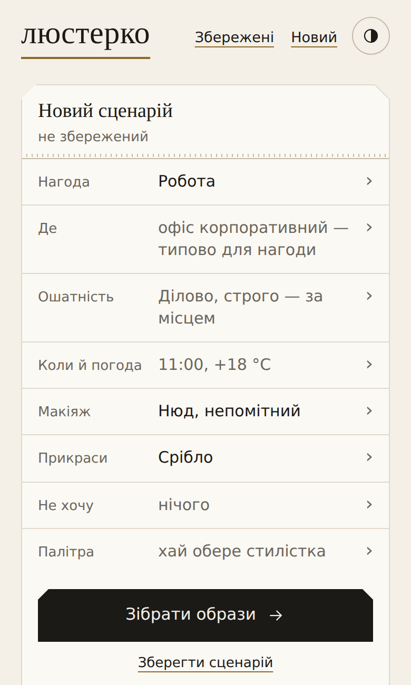
Під рядками — «Усе правильно?» з двома словами так і поправити, велика кнопка Зібрати образи і посилання Зберегти сценарій (щоб повернутись до нього пізніше через Збережені).
| Нагода | Плитки: спорт, подорож, звичайний день, побачення, свято, траур, робота, весілля-гостею. Обери одну. |
| Де | Список місць: ресторан, офіс корпоративний, парк, театр і так далі. |
| Ошатність | Наскільки ошатно — від «за місцем» до святкового. Під списком рядок «Візьмемо: …» показує, що код підставить, якщо не обирати. |
| Коли й погода | Година, температура, плитки «Без опадів / Дощ / Сніг», вітер і реагенти на дорогах. |
| Макіяж | Нюд · Помітний · Яскравий, виразний · хай обере стилістка. Під плитками — відтінки помади, рекомендовані під твої кольори, і «свій відтінок». |
| Прикраси | Золото · Срібло · Перли · Етно · Без прикрас · хай обере стилістка. |
| Не хочу | Тверда межа, а не побажання. Чипи зон тіла: глибоке декольте, відкрита спина, руки, плечі, ноги, живіт. Нижче окремим блоком стоїть те, що стилістка почула у твоїх словах (напр. «підбори») — дотик знімає. |
| Палітра | Веде на окремий екран (розділ 6). Типово стоїть «хай обере стилістка». |
Тап по рядку піднімає знизу аркуш із плитками або списками. Обране підсвічується, кнопка Готово внизу закриває аркуш.
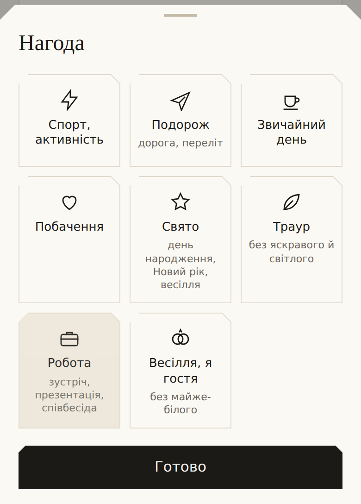
Вісім плиток з піктограмами й уточненням дрібним шрифтом: «Свято — день народження, Новий рік, весілля», «Траур — без яскравого й світлого», «Весілля, я гостя — без майже-білого».
Скоро цей набір перемалюють: буде сім плиток і окрема плитка «Інше». Якщо бачиш інакше — так і має бути.
Нагоди, якої тут нема (церква, прощання, випускний, похід у гори), кажи словами в розмові — стилістка їх розуміє, навіть якщо плитки на це нема. Це один із сценаріїв перевірки (№ 8 і № 9).
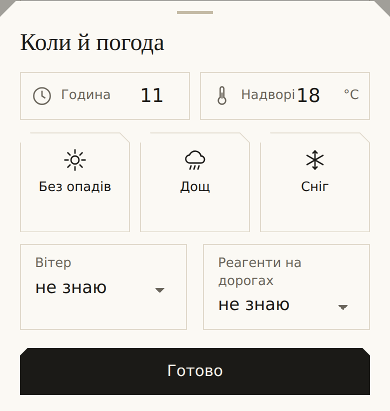
Година впливає на світло і на те, наскільки ошатно; Надворі, °C — на шари одягу. Плитки опадів — Без опадів · Дощ · Сніг. Нижче два списки: Вітер (не знаю / безвітря / помірний / сильний) і Реагенти на дорогах (важливо для взуття взимку).
Погоду варто ганяти навмисне: мороз, спека, вітер і дощ — сценарій № 10.
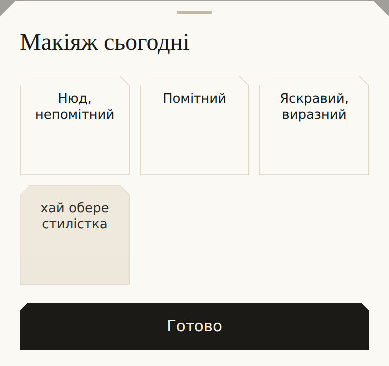
Чотири плитки. Якщо обрати будь-яку, крім «хай обере стилістка», нижче розгорнеться сходинка відтінків помади, поділена на «рекомендовані тобі» й «решта», плюс кнопка свій відтінок для власного кольору.
Це поле сьогоднішнє, не постійне: воно живе в сценарії, а не в профілі, і на наступний сценарій не переноситься.
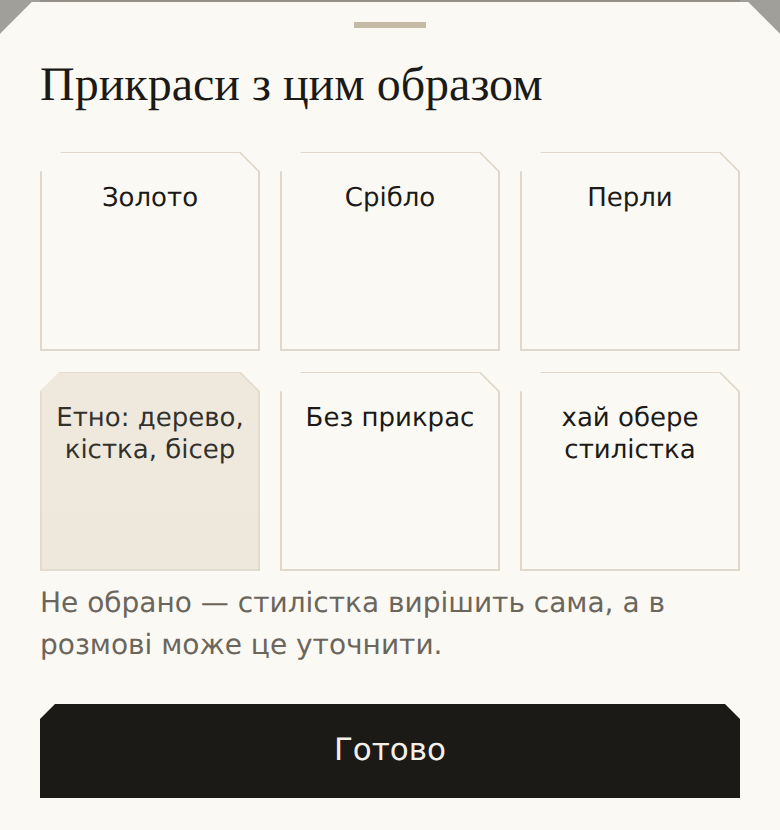
Шість плиток. Якщо не обирати — під ними стоїть рядок «Не обрано — стилістка вирішить сама, а в розмові може це уточнити».
Те саме можна сказати словами: «хочу срібло», «сьогодні без прикрас». Сценарій № 13 перевіряє, чи сходяться ці два шляхи.
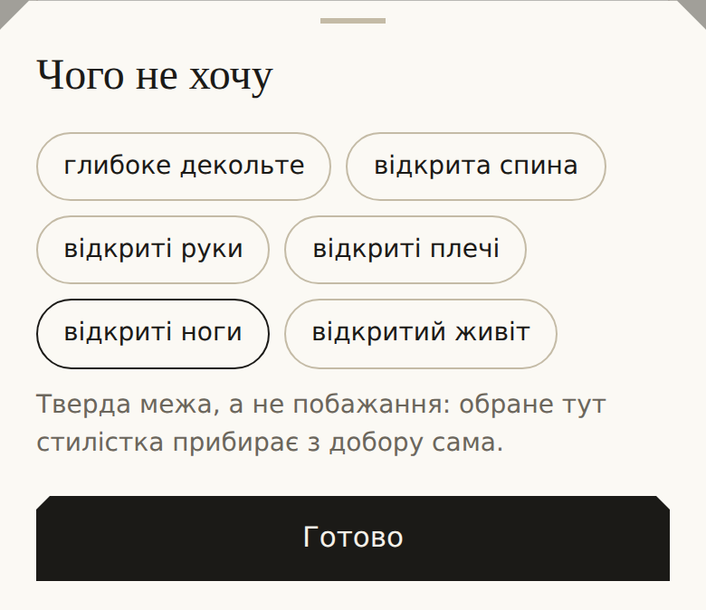
Шість чипів зон тіла. Те, що ти тут позначила, стилістка прибирає з добору сама — це тверда межа, а не побажання.
Якщо ти сказала в розмові щось на кшталт «без підборів» чи «без міні», воно з'явиться окремим блоком нижче з поясненням «А це стилістка почула у твоїх словах… Почула не те? Дотик знімає».
Помилкою вважай, якщо в зібраних образах усе одно є те, що ти заборонила.
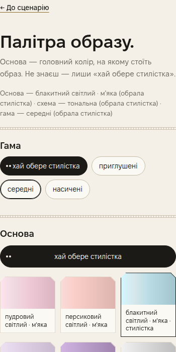
Окремий екран, куди ведуть рядок Палітра з картки сценарію. Вгорі — посилання ← До сценарію.
Тут можна нічого не чіпати. Типово всюди стоїть «хай обере стилістка», і вона обирає сама, з причиною. Рядок під заголовком показує, що саме зараз обрано і ким.
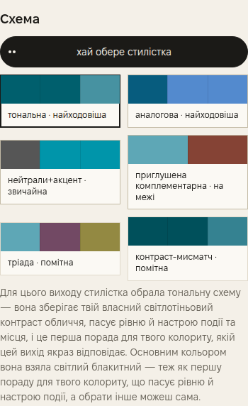
Під схемами стилістка пояснює словами, чому вона обрала саме цю, і коротко описує кожну з решти. Унизу — смужка з обраними кольорами й рядок про те, чиїм вибором вони стали.
Сценарій № 11 просить пройти один і той самий вихід двічі: раз — лишивши всюди «хай обере стилістка», раз — обравши основу й схему самій. Образи мають відчутно відрізнятися, і кольори речей мають збігатися з тим, що ти обрала. Якщо обрала — а в образах тих кольорів нема, це помилка й про неї треба написати у вердикті.
| Гама | Приглушені · середні · насичені — наскільки гучні кольори. Плюс «хай обере стилістка». |
| Основа | Головний колір, на якому стоїть образ. Плитки з назвою кольору й підписом сім'ї. Рекомендовані стоять зверху; нижче розкривач «не радимо, але можна» з рештою — вони доступні, просто менш ходові. |
| Схема | Як добираються решта кольорів: тональна, аналогова, нейтралі+акцент, приглушена комплементарна, тріада, контраст-мисмач. Біля кожної підпис «найходовіша» чи «помітна». |
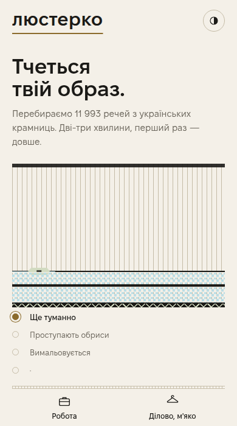
Після Зібрати образи екран змінюється на ткацький верстат: «Перебираємо ~12 000 речей з українських крамниць. Дві-три хвилини, перший раз — довше».
Нижче — список станів, і поточний підсвічений: Ще туманно → Проступають обриси → Вимальовується. Під ними двома значками показано, що саме зараз збирається: нагода й ошатність.
Унизу малюються чотири порожні рамки — місця під образи, які ось-ось з'являться.
Перший збір за день — до трьох-чотирьох хвилин. Якщо минуло більше п'яти і нічого не змінилось — це поломка (розділ 14). Не перезавантажуй сторінку одразу: спершу запиши час і що було написано на екрані.
Дрібниця, яку ти можеш помітити: четвертий рядок у списку станів наразі без слова — сама крапка. Ми про це знаємо, окремо писати не треба.
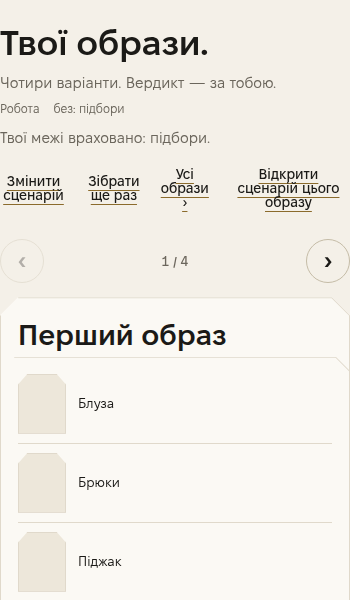
«Твої образи. Чотири варіанти. Вердикт — за тобою.» Під заголовком — нагадування, під який випадок вони зібрані, і рядок «Твої межі враховано: …» з тим, що ти заборонила.
Образи називаються просто: Перший, Другий, Третій, Четвертий. Це навмисне — щоб назва не підказувала тобі оцінку.
Це не поломка, а частина перевірки: два з чотирьох варіантів навмисне зібрані інакше — без крамниць і без цін, самими описами речей. Ми хочемо знати, чи видно різницю. Вердикт на них потрібен так само, як на решту: чи впізнала б ти в цьому образ, який можна вдягнути.
| Змінити сценарій | Повертає на картку сценарію, щоб поправити рядок і зібрати заново. |
| Зібрати ще раз | Той самий сценарій, інші чотири образи. Корисно, щоб перевірити, чи не повторюються ті самі речі. |
| Усі образи › | Уся бібліотека образів і блок вивантаження вердиктів (розділ 12). |
| ‹ 1 / 4 › | Гортання між чотирма образами. Внизу картки ті самі стрілки підписані словами «попередній» і «наступний». |
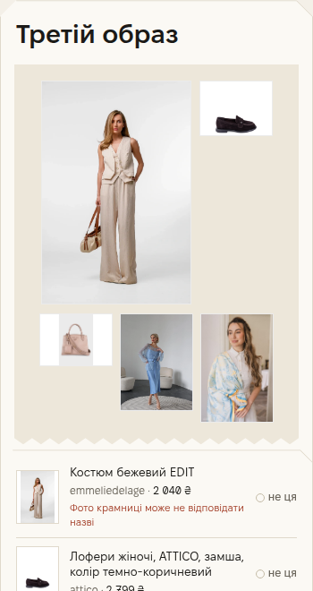
Якщо бачиш на екрані щось на кшталт look_level high, #3f4f49, R-COL-16, м-001, фігурні дужки чи англійські слова посеред українського речення — це поломка. Напиши про неї у вердикті словами: «на третьому образі в поясненні стоїть незрозумілий код».
| Колаж угорі | Фотографії всіх речей образу з крамниць. Тапни фото, щоб роздивитись більше. |
| Список речей | Назва, крамниця й ціна кожної речі. Праворуч від кожної — маленька намистина не ця. |
| не ця | Познач річ, яка не так, — і тисни «Зібрати ще раз». Образ зберуть заново без неї. Дотик удруге знімає позначку. |
| «Фото крамниці може не відповідати назві» | Червонуватий рядок під річчю. Крамниця іноді віддає не те фото — стилістка про це попереджає. Якщо бачиш такий рядок, звір фото з назвою й напиши у вердикті, чи вони справді різні. |
| Разом | Сумарна ціна образу. |
| Чому цей образ | Пояснення стилістки: чому саме ці речі під твій випадок. Це головний текст для перевірки — читай його уважно. |
| Як це носити | Дрібні поради: як нести сумку, що підкотити, куди заправити. |
| Приміряти на себе | Малює цей образ на твоєму фото на повний зріст. Працює тільки якщо таке фото є в профілі. Малюється довго — до хвилини. |
| Або додати картинку вручну | Розкривач для свого фото, якщо автоматичне приміряння не вийшло. |
| код не знає | Згорнутий блок (не на кожній картці) з тим, чого код про речі не з'ясував. Можна не відкривати. |
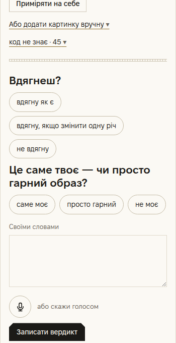
Нижня частина кожної картки. Два питання кнопками, потім поле для слів.
Це два різні питання. Образ цілком може бути «вдягну як є» і при цьому «просто гарний» — і саме така пара нам найцікавіша.
Під кнопками є велике поле «Своїми словами» і значок мікрофона з підписом «або скажи голосом». Голосом часто виходить докладніше — говори вільно, слова лягають у те саме поле, і їх можна поправити перед тим, як записати.
✗ «Не моє.» · ✗ «Норм.» · ✗ «Погано підібрано.»
✓ «Не моє. Спідниця-олівець із лоферами виглядає як форма — я в офісі так не вдягаюся. Сумка взагалі пляжна, на роботу з нею не піду. Блуза гарна, її б лишила. І написано, що образ спокійний, а бірюзова сумка кричить на весь образ — це суперечить самому поясненню.»
Записати вердикт — чорна кнопка внизу. Після неї під карткою з'являється слово «Записано». Гортай до наступного образу стрілкою наступний ›.
Вердикт — на кожен із чотирьох образів. Образ, який тобі не подобається, потрібен нам більше за той, що подобається. Якщо пропустити «погані» образи, ми побачимо систему кращою, ніж вона є.
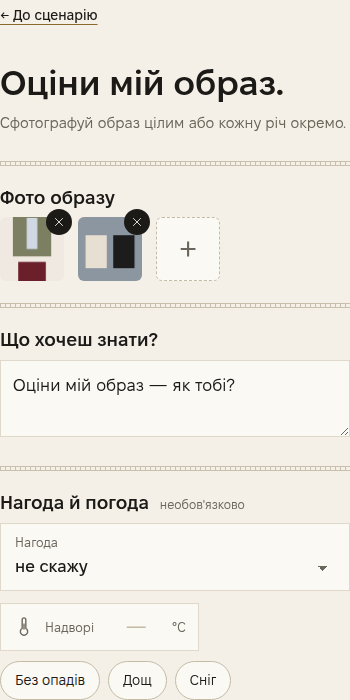
Четверта вкладка внизу — Оцінити. Це окремий шлях: не «збери мені образ», а «подивись на те, що я вже вдягнула».
Те саме можна зробити з розмови на головному екрані: додай фото значком фотоапарата й напиши «оціни мій образ». Обидва шляхи мають давати одне й те саме — це перевіряє сценарій № 14.
| Фото образу | Тапни «+», щоб додати знімок. Можна сфотографувати образ цілим на собі або кожну річ окремо, розкладену. Кількох фото не бійся — так точніше. Хрестик на фото прибирає його. |
| Що хочеш знати? | Поле з твоїм питанням. Типово вже стоїть «Чи поєднуються ці кольори між собою і чи підійдуть вони мені?» — його можна стерти й написати своє: «чи піду я в цьому на співбесіду?», «що тут зайве?». |
| Нагода й погода | Необов'язково. Список нагод (від «не скажу» до «Весілля вдень») і температура з опадами. Без них оцінка буде загальніша. |
| Оцінити | Кнопка внизу. Відповідь малюється до хвилини. |
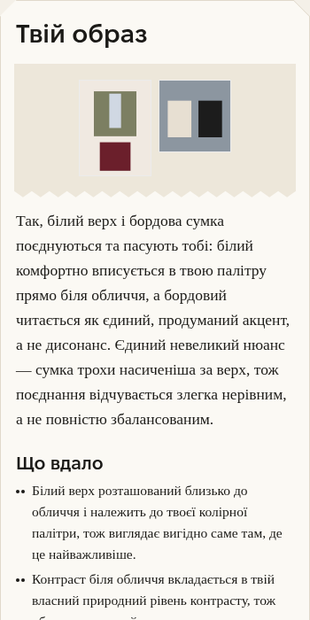
Далі — той самий вердикт, що й на звичайній картці (Вдягнеш?, Це саме твоє…, поле «Своїми словами», Записати вердикт).
Унизу — «Спитати ще»: поле «Твоє питання про цей образ» і кнопка Спитати. Тут можна допитати стилістку: «а якщо змінити взуття?», «а на вечір це піде?».
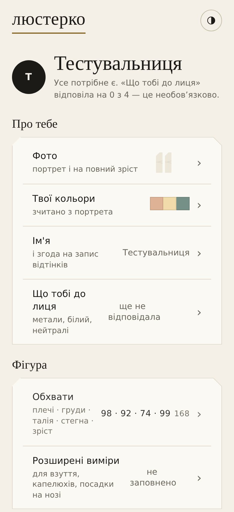
Четверта вкладка Профіль. Тут лежить усе, що ти вводила на знайомстві, і все це можна змінити будь-коли. Рядок під іменем каже, чого ще бракує: «Усе потрібне є. „Що тобі до лиця“ відповіла на 0 з 4 — це необов'язково».
Один сценарій пройди без жодного фото (сценарій № 15): Люстерко має працювати й так, просто менш точно. Якщо без фото воно зовсім не збирає образи або мовчить про причину — це помилка.
| Фото | Портрет і на повний зріст. Тут їх можна додати, замінити чи прибрати. |
| Твої кольори | Смужки відтінків і підпис, звідки вони: «зчитано з портрета» чи введені рукою. |
| Ім'я | Ім'я або псевдонім і галочка згоди на запис відтінків разом із вердиктами. |
| Що тобі до лиця | Ті самі чотири питання з другого кроку знайомства. Показує «ще не відповідала», якщо ти їх пропустила. |
| Обхвати | Плечі · груди · талія · стегна · зріст. |
| Розширені виміри | Необов'язкові: для взуття, капелюхів, посадки на нозі. |
| Люди на цьому телефоні | Кілька профілів на одному пристрої, у кожного свої фото й сценарії. Для тестування здебільшого не потрібно. |
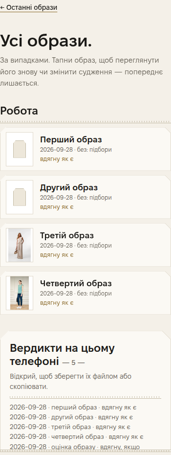
Вкладка Образи → посилання Усі образи ›. Тут лежать усі образи, які ти коли-небудь зібрала, згруповані за нагодами. Під кожним — дата, місце й твій вердикт.
Тапни образ, щоб переглянути його знову чи змінити судження — попереднє при цьому не зникає, ми бачимо обидва.
Посилання ← Останні образи вгорі повертає назад.
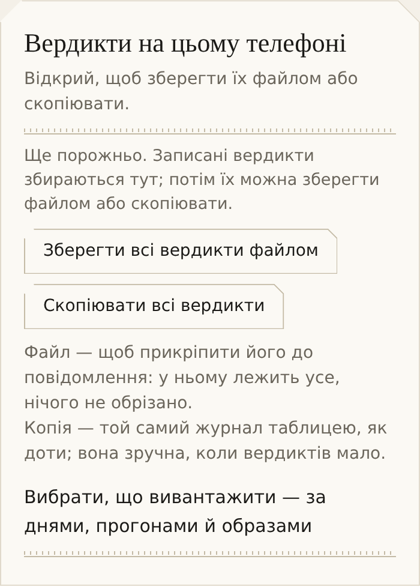
Найпростіше — раз наприкінці дня, одним файлом. Якщо ти працюєш кілька днів, вивантажуй щодня: так робота не загубиться, якщо з телефоном щось станеться. Кнопка «Лише не вивантажені» допоможе не слати те саме двічі.
| Скопіювати всі вердикти | Те саме, але текстом у буфер обміну. Зручно, коли вердиктів мало й хочеться вставити просто в чат. |
| Вибрати, що вивантажити | Розкривач: позначити окремі дні, збори чи образи. Кнопки «Лише не вивантажені», «Позначити всі», «Зняти всі» і «Зберегти позначене файлом». |
Кожен сценарій — один повний прохід: сказати нагоду → перевірити картку → зібрати образи → залишити чотири вердикти. Можна в будь-якому порядку й не за один день. «Скажи» — це те, що треба написати або сказати голосом у поле розмови; слова можна міняти на свої, головне — зберегти суть.
Поломка — це коли застосунок не працює, а не коли образ не сподобався. Про несмак пиши у вердикті; про поломку — окремим повідомленням.
Не чисти дані сайту й не відкривай Люстерко в приватному вікні: вердикти лежать на твоєму телефоні і зникнуть назавжди. Якщо вкладка Люстерка вже відкрита — не закривай її, поки не вивантажила файл.
Файл вердиктів і повідомлення про поломки — туди ж, звідки ти дістала посилання на Люстерко. Одним повідомленням: файл вкладенням, текст про поломки — поруч. Дякуємо — без цих вердиктів система не навчиться.